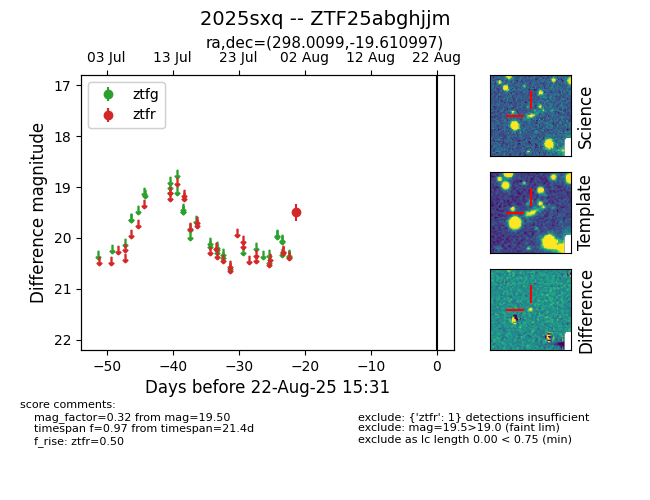

Target 2025sxq at 2025-08-22 15:31, see:
FINK: fink-portal.org/ZTF25abghjjm
Lasair: lasair-ztf.lsst.ac.uk/objects/ZTF25abghjjm
ALeRCE: alerce.online/object/ZTF25abghjjm
TNS: wis-tns.org/object/2025sxq
YSE: ziggy.ucolick.org/yse/transient_detail/2025sxq
alt names
ZTF25abghjjm (ztf,alerce)
2025sxq (tns,yse)
coordinates:
equatorial (ra, dec) = (298.0099,-19.61100)
galactic (l, b) = (21.3437,-21.84841)
photometry
last ztfr=19.50
1 ztfr detections
